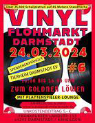

Im Shop herrscht immer eine gemütliche Atmosphäre. Man fühlt sich fast wie zu Hause und kann sich auch ungestört auf ein Sofa setzten und eine Platte auflegen. Es läuft immer Musik und die Mitarbeiter sind immer da, um Fragen zu beantworten. Bei uns ist jeder willkommen und der Shop ist ein Safe Space für alle musikbegeisterten Personen!
Musik verbindet und das spürt man bei uns. Es herrscht eine familiäre Atmosphäre im Team und jeder der unsere Leidenschaft für Musik teilt, ist willkommen sich uns anzuschließen oder auch einfach nur Zeit mit uns im Shop zu verbringen.
Wir Kaufen unsere Platten auf Auktionen, Messen, Flohmerkten, Sammlungsauflösungen und von Privatpersonen. Also haben Sie Platten, die Sie nicht mehr hören? Kommen Sie gerne vorbei und wir schauen sie uns an und verhandeln dann, je nach Ergebnis der Begutachtung, über einen Preis oder einen Tausch für eine andere Platte.
Wann etwas mal nicht bei uns im Shop zu finden ist, können Sie sich gerne an einen Mitarbeiter wenden. Wir führen Listen mit gewünschten Platten, die wird dann auf das nächste Event mitnehmen und versuchen abzuarbeiten.
Diese Events stehen in der nächsten Zeit an, deshalb falls Sie etwas auf unserer Wunschliste setzen wollen, ist jetzt die perfekte Zeit. Falls Sie es nicht schaffen, persönlich bei uns vorbeizukommen, schreiben Sie uns gerne eine Mail mit Ihren Wünschen. Wenn wir die Platte dann für Sie gefunden haben, werden wir uns mit Ihnen in Verbindung setzen.
|  |